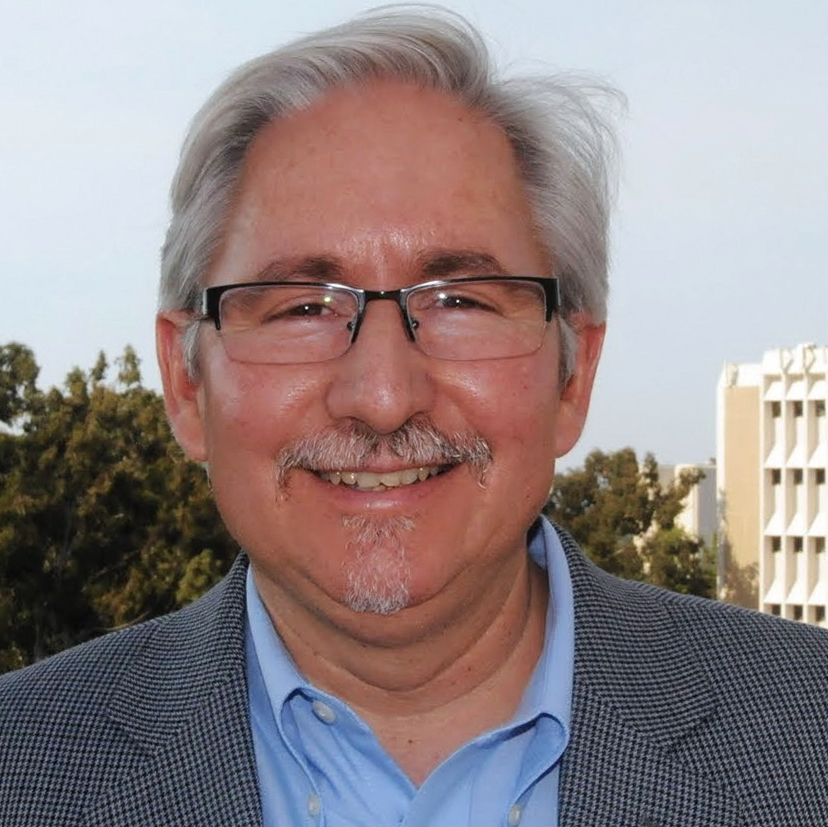
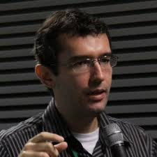

2015 Workshop on
Software Support for Collaborative and Global Software Engineering
Tuesday, November 10, 2015 in Lincoln, Nebraska
2015 Workshop on
Tuesday, November 10, 2015 in Lincoln, Nebraska
 David Redmiles is a Professor in the Department of Informatics in the Donald Bren School of Information and Computer Sciences at the University of California, Irvine. He received his Ph.D. in Computer Science from the University of Colorado, Boulder, in 1992. For the past decade, he has been researching collaborative software engineering, including issues of awareness, trust, and related visual software tools. He has organized a number of workshops including ones at ICSE, CHI, and CSCW. He was General Chair of the 2005 IEEE/ACM Conference on Automated Software Engineering (ASE 2005), was Program Co-Chair of the 2013 International Symposium on End-User Development (IS-EUD 2013), and will be General Chair of the 2016 International Conference on Global Software Engineering (ICGSE 2016). He is an ASE Fellow and former member of the ASE Steering Committee.
 Leonardo Gresta Paulino Murta is an Assistant Professor at the Computing Institute of Universidade Federal Fluminense (UFF). He holds a Ph.D. (2006) and a M.S. (2002) degree in Systems Engineering and Computer Science from COPPE/UFRJ, and a B.S. (1999) degree in Informatics from IM/UFRJ. Relevant to ASE, he received an ACM SIGSOFT Distinguished Paper Award at ASE 2006. He is Program Co-Chair of the 2015 Brazilian Symposium on Software Engineering (SBES 2015).
Sabrina Marczak is an Adjunct Professor at the Computer Science School at PUCRS University, Brazil. She received her Ph.D. in Computer Science from the University of Victoria, Canada in 2011. Her dissertation research was in the area of collaboration in software engineering. Her research interests are in the areas of global software development, collaboration in distributed teams, and requirements engineering. She was Local Chair for the 2012 IEEE International Conference on Global Software Engineering.
John Penix is a Senior Software Engineer at Google working on software engineering tools and improving software testing. He received his Ph.D. in Computer Engineering from the University of Cincinnati in From 1998 to 2006, he worked in the Automated Software Engineering group at NASA Ames Research where among other projects, he contributed to Java Pathfinder. He was Program Co-Chair of ASE 2003 and is a former member of the ASE Steering Committee.
Andrew Begel is a Senior Researcher in the VIBE group at Microsoft Research in Redmond, WA, USA. He received his Ph.D. in Computer Science from the University of California at Berkeley in 2005. Andrew’s recent research focuses on several aspects of software engineering: social media, data science, and developer biometrics. Andrew has co-organized many workshops (including CHASE) at ICSE, FSE, and CSCW. He currently serves as the co-chair for Tool Demo track of ASE 2015 and the Student Research Competition for FSE 2015, is a co-organizer for the CHASE workshop at ICSE 2015, and was PC co-Chair for ICPC 2014.